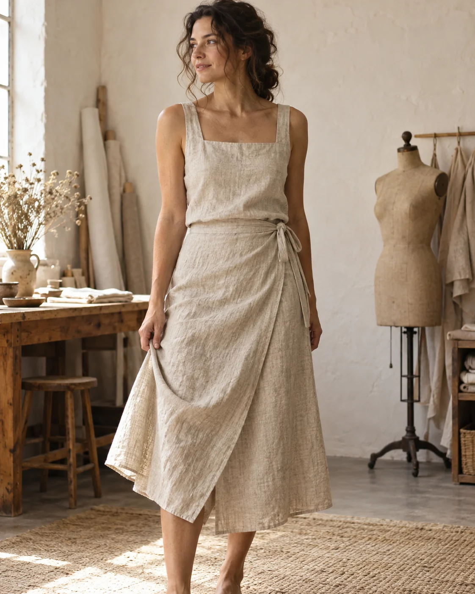
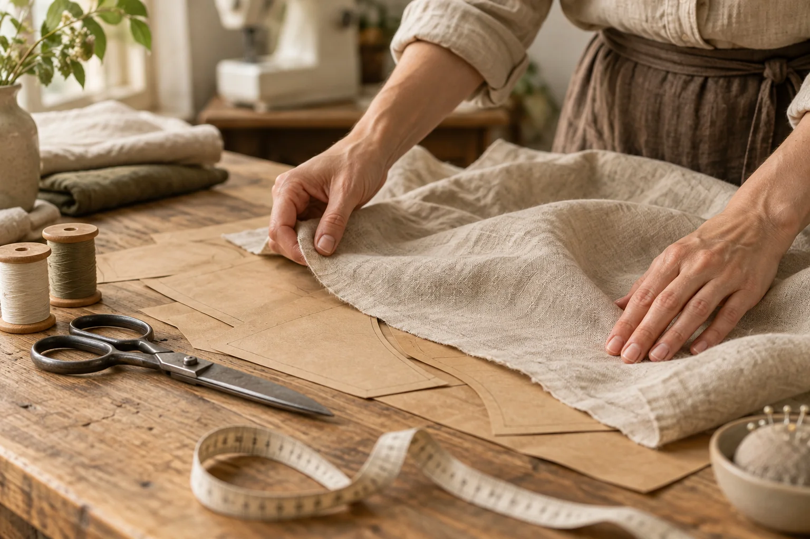

Molde digital
Arquivo para baixar, imprimir e começar a criar.
Projetos de costura para fazer em casa
Modelagem, conhecimento e autonomia para transformar tecido em uma roupa feita por você — no seu tempo e do seu jeito.
Não é roupa pronta. É um projeto completo para você criar.

Arquivo para baixar, imprimir e começar a criar.
Medidas, acabamentos e detalhes da peça.
Indicações para escolher e comprar com segurança.
Orientações para acompanhar toda a confecção.
Primeira coleção
Escolha uma peça para conhecer o projeto. O catálogo começa com cinco modelagens essenciais e cresce aos poucos.
Modelagem ampla
Caimento confortável
Ajuste versátil
Leve e essencial
Linhas descomplicadas
A coleção está em desenvolvimento. Medidas, tecidos, metragens e preços serão publicados após a validação de cada modelagem.

Tudo em um só projeto
Mais do que um molde, cada projeto reúne as informações necessárias para que você entenda a peça e acompanhe a própria criação.
Do desejo à peça pronta
Encontre a modelagem que combina com o que você quer criar.
Veja nível, materiais, metragem e tudo que acompanha o projeto.
Finalize o pagamento em poucas etapas e receba o acesso digital.
Baixe os arquivos, prepare o tecido e faça a peça ganhar forma.
Sobre a Amuleto
A Amuleto de Pano nasce para aproximar pessoas da costura e devolver significado ao processo de vestir.
Em vez de entregar uma roupa pronta, compartilhamos modelagem e conhecimento para que cada pessoa possa criar com as próprias mãos, respeitando seu ritmo, seu corpo e suas escolhas.
Antes de começar
Não. A proposta é “Faça você mesmo”: você recebe um projeto digital com molde e orientações para confeccionar a própria peça.
Não. O molde será digital, disponibilizado para download e impressão após a compra.
Cada projeto indicará seu nível de dificuldade. A coleção terá opções mais simples para quem está começando e orientações para acompanhar o processo.
A grade de tamanhos será informada na página de cada projeto após a validação final das modelagens.
Um novo jeito de vestir começa aqui
Os canais de atendimento e compra serão conectados antes do lançamento.